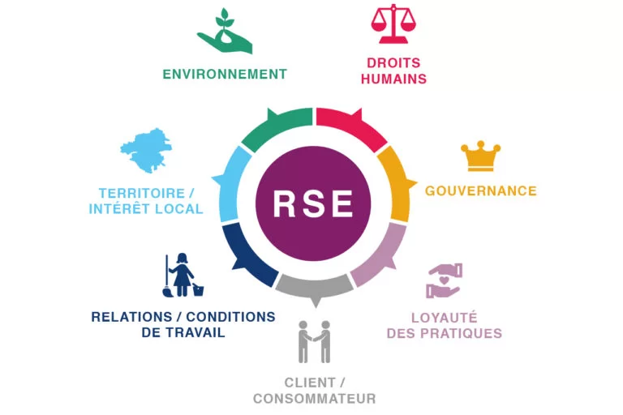

Acceuil
Orange est une entreprise de télécommunication française. Elle est le principal opérateur de téléphonie mobile en France et, un des principaux fournisseurs d'accès à internet. Elle est également présent dans le monde entier, notamment en Afrique et au Moyen-Orient.
L’activité d’orange en l’état actuel :
Orange peut proposer des solutions technologiques permettant aux PME de réduire leur empreinte environnementale (ex. cloud éco-responsable, outils collaboratifs pour réduire les déplacements).

Notre objectif
Créer des offres RSE écoresponsables, accessibles et inclusives pour les clients PME d'Orange.

La RSE qu'est-ce que c'est ?
La RSE est la responsabilité sociétale des entreprises. C'est un concept qui vise à intégrer les préoccupations sociales, environnementales et économiques dans les activités de l'entreprise. Cela signifie que l'entreprise doit prendre en compte l'impact de ses activités sur la société et l'environnement et agir de manière responsable.
La RSE au cœur des PME
La RSE est un enjeu majeur pour les PME (petite et moyennes entreprises). En effet, les PME ont un impact important sur la société et l'environnement en raison de leur taille et de leur nombre. Il est donc essentiel que les PME intègrent la RSE dans leur stratégie et leurs activités pour contribuer au développement durable et à la responsabilité sociétale.

Données :
Selon le Baromètre RSE 2024, 72% des PME disposent d'un budget dédié à la RSE, et 62% ont une équipe de 1 à 2 personnes consacrées à ces enjeux. De plus, 34% des PME possèdent au moins un label, une certification ou une notation en matière de RSE.